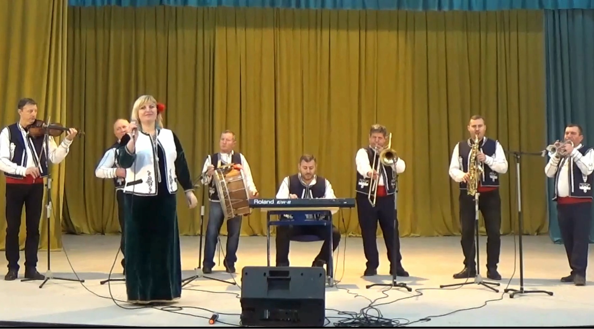
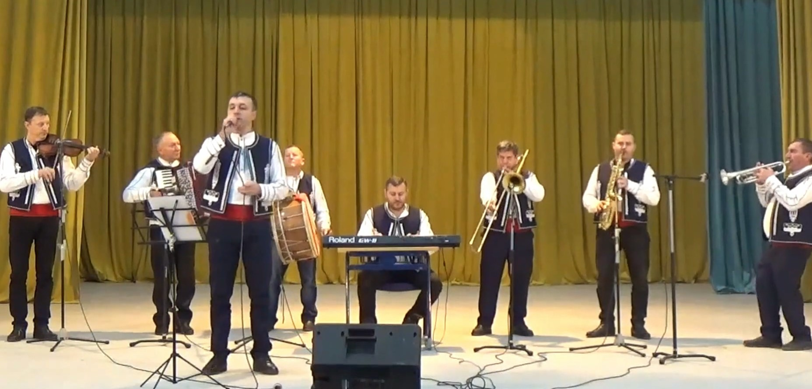
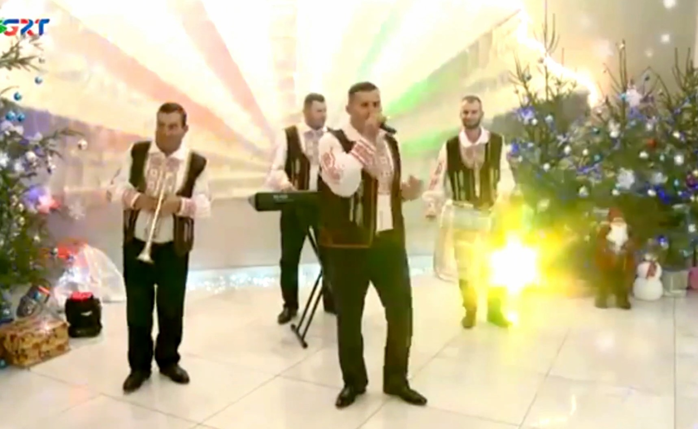

Оркестр народных инструментов "Duygum"
Коллектив, сохраняющий и развивающий традиции народной музыки.
📖 О коллективе
Оркестр «Duygum» был основан в 1972 году и является одним из старейших творческих коллективов Дома культуры села Казаклия.
С первых лет своей деятельности коллектив завоевал признание благодаря высокому уровню исполнения и яркому национальному колориту репертуара.
Оркестр активно занимается сохранением и развитием гагаузского, молдавского и болгарского музыкального фольклора, передавая традиции через живое звучание народных инструментов.
Руководитель
Данаджи Георгий Константинович — руководитель оркестра с 1987 года, профессиональный музыкант и продолжатель музыкальной династии.
Обладатель многочисленных наград, дипломов и Гран-при международных фестивалей.
Деятельность
- Участие в фестивалях и конкурсах (Молдова и международный уровень)
- Выступления на праздниках и культурных мероприятиях
- Сохранение и популяризация народной музыки
Достижения
- Гран-при международных фестивалей (Болгария, Молдова)
- Участие в «Гагауз тюркюсю», «Sevda Dalgaları»
- Победы в конкурсах народной музыки
📸 Фото/Видео галерея




